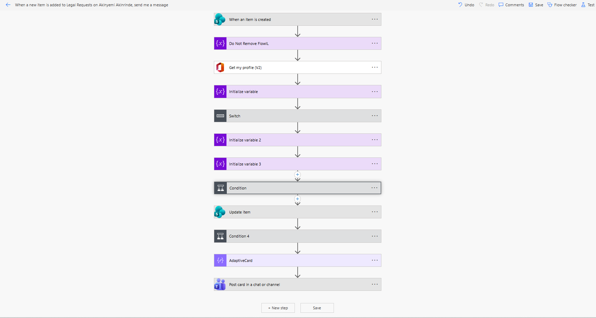
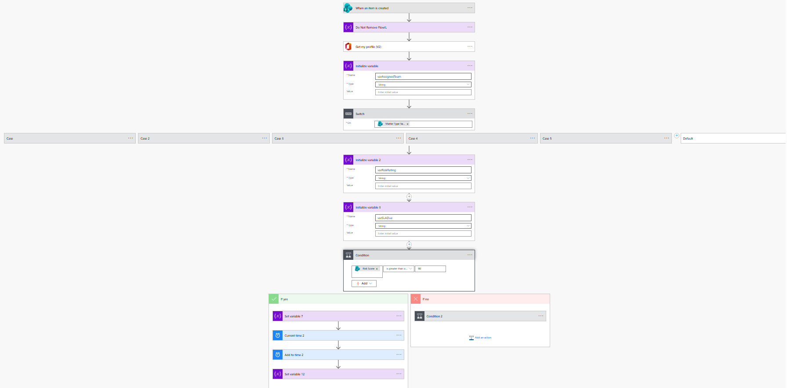
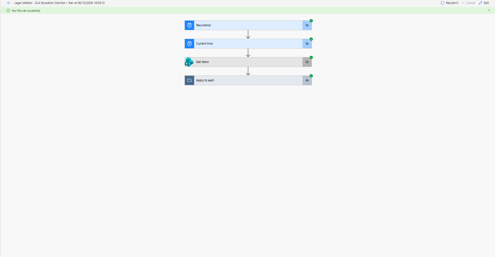
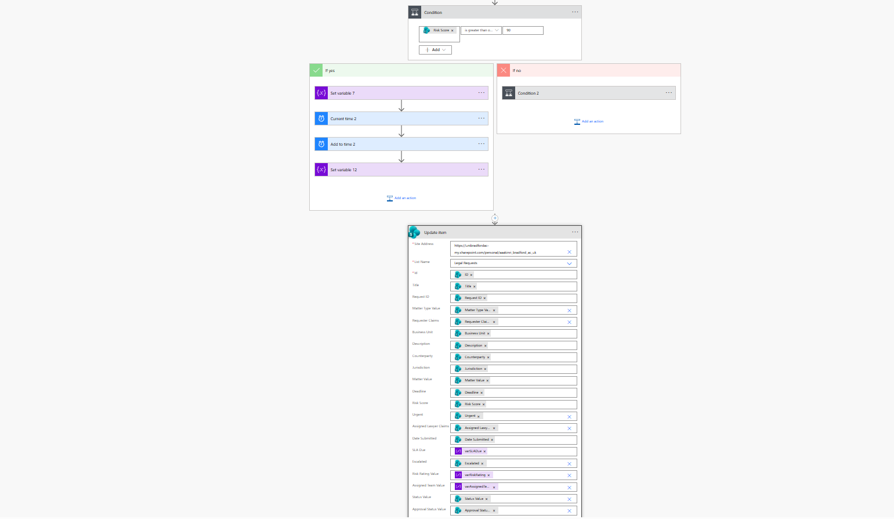
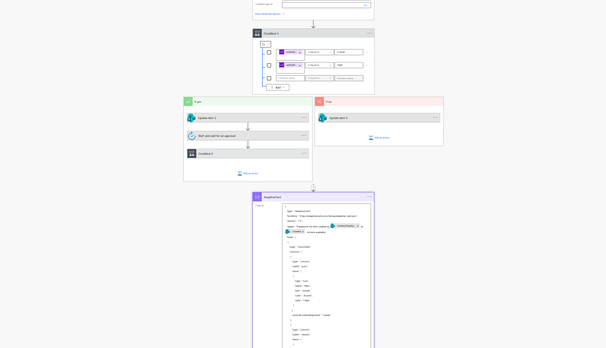
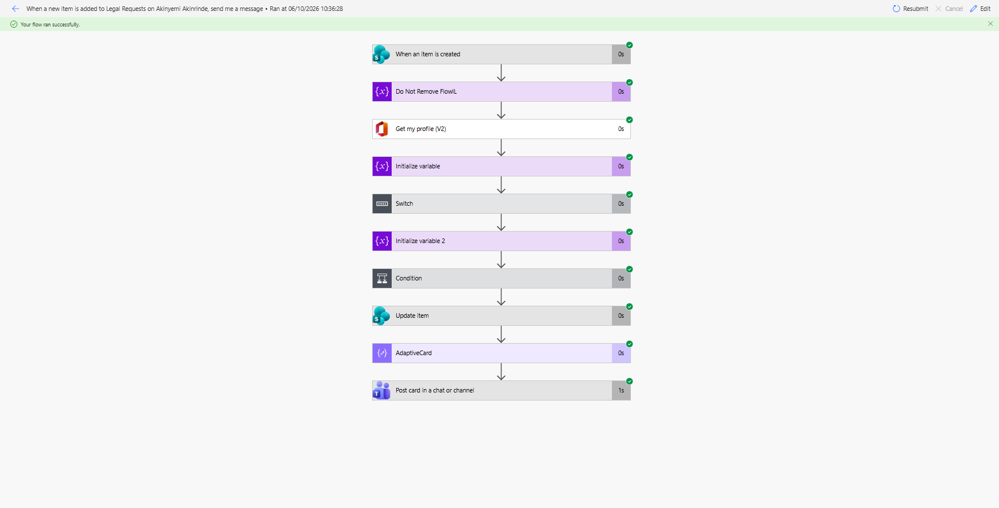
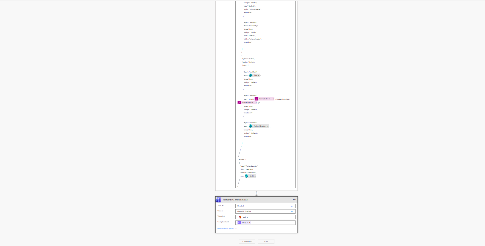
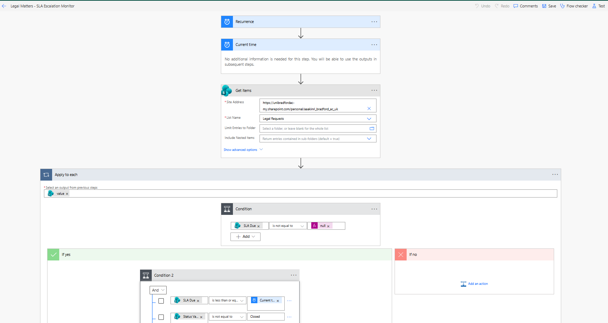
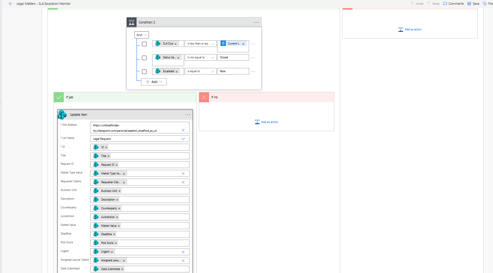
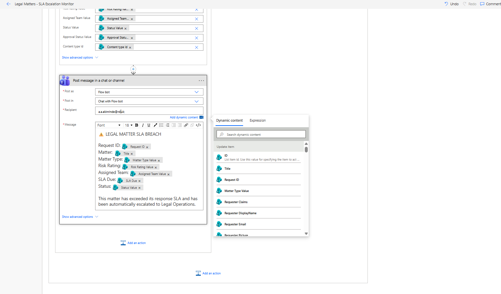

From legal request to the right team, automatically.
An interactive demonstration of a legal intake and matter-triage workflow designed for an in-house legal function. Submit a fictional legal request to experience automated routing, risk classification, human-approval rules, service levels and escalation.
Submit a fictional legal request
No information is stored. Use the presets or create your own fictional scenario.
Triage result
The same decision rules are implemented in my Microsoft Power Automate prototype.
Matter triaged
SLA breach detected — matter escalated
The matter has been flagged as escalated. In the implemented Power Automate workflow, a scheduled monitoring flow identifies open matters whose SLA has expired, updates the SharePoint matter record and generates a Legal Operations alert.
Behind the interactive demo
The public experience above mirrors a working legal operations prototype configured using Microsoft SharePoint and Power Automate. The screenshots below show the actual workflow implementation, including intake, routing, risk classification, human approval, matter updates and background SLA escalation.
End-to-end legal intake and triage
A new legal request triggers an automated workflow that classifies the matter, routes it to the appropriate legal team, calculates risk and SLA requirements, applies approval rules and updates the matter record.

Decision logic and human oversight
Matter type determines the appropriate legal workstream while risk scoring drives service levels and approval requirements. High and Critical matters require human approval, while lower-risk matters can proceed automatically.

Background SLA monitoring and escalation
A separate scheduled workflow reviews open matters, identifies expired response SLAs, checks that the matter has not already been escalated, updates the SharePoint record and generates a Legal Operations notification.

Detailed implementation
Select any screenshot to inspect the configuration at full size.







The Microsoft implementation runs within a private university environment. The public interface therefore reproduces the same decision logic using fictional data, allowing the workflow to be experienced without exposing the underlying Microsoft tenant, credentials or SharePoint records.
How the workflow works
The prototype combines structured legal intake with automated workflow execution and human oversight.
Intake
Business users submit structured information instead of relying on unstructured email requests.
Routing
Matter type determines which legal workstream receives the request.
Risk & SLA
Risk scoring drives classification and demo response service levels.
Human oversight
High and Critical matters require human approval before final assignment.
Escalation
A separate scheduled flow monitors open matters and escalates SLA breaches.
Built to demonstrate legal-technology consulting thinking.
I designed the workflow around an in-house legal team's need to capture requests consistently, route work intelligently, preserve human judgement for higher-risk matters and monitor service levels.
The underlying workflow logic has been configured separately in Microsoft SharePoint and Power Automate. This public site mirrors that logic using fictional data so the workflow can be experienced without exposing the private Microsoft environment or university tenant.